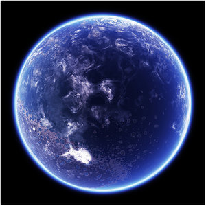
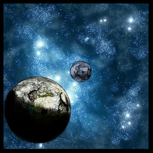
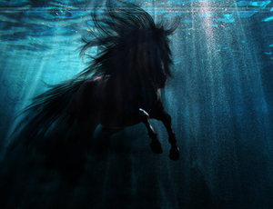

| Ceci est un plôt orange et blanc. |
Mon trésor, il est là ! Je le tiens devant moi ! Moi j'ai mon trésor ! C'est à moi ! c'est le mien ! Il s'appelle Muerta !
Je t'aime ma Muerta !
Je t'aime ma Muerta !
Pas besoin d'être pirate Pour voguer sur l'or, Sur tes mers ou sur ton eau plate, C'est à moi ! C'est le mien ! Il s'appelle Muerta !
Je t'aime ma Muerta !
Je t'aime ma Muerta !
"Chant Flibustier en l'honneur de leur Capitale ; Muerta."
| Muerta | |
|---|---|
 | |
| Galaxie | Aurore |
| Coordonnées | 5.6.5.2.1 |
| Lunes | Thiekar / Tarkh |
| Soleils | 1 |
| Cycle journalier | 29.00 heures standards |
| Surface immergée | 87% |
| Capitale | San Muerta |
| Population | 10 187 964 104 habitants |
| Langue | Langage Inter-Galactique |
| Gouvernement | Conseil de la flibuste |
| Statut | Planète capitale de la Flibuste |
| Climat principal | Océano-Marin |

Sommaire
Muera, entre Terre et Mer :
Planète Natale de John rackham, Muerta est une planète composée en majeure partie de mers et d'océans. Certains Océans peuvent être calmes, d'autres très dangereux et difficilement navigable. Seul les marins étant assez fou où experimentés peuvent naviguer sur ces Océans perpetuellement déchaînés.
Cependant Muerta possède aussi ses territoires calmes et magnifiques comme L'archipel des Islas Rojos. Archipel aux paysages multicolores d'une rare bautée.
Sur Muerta, il n'y a pas de langue spécifique. Beaucoup de ses habitants étainent des hors la loie ayant trouvés asile sur la planète d'Azur et tous ne parlaient pas la même langue, donc il a été convenu que la langue officielle serait le language Inter-Galactique.
Certains racontent dans les tavernes, après avoir bu un peut trop, avoir rencontré des monstres marins d'une taille énome et terrifiante, capable de briser un navire en deux d'un seul coup. D'autres affirment avoir apperçut des femmes nager au grès du courant et des vagues en chantant une douce mélodie envoutante. Ce qui donne lieu à des centaines de légendes sur les monstres marins, la plus part servant à faire peur aux jeunes mousaillons.
Les lunes Thiekar et Tarkh
Muerta possède aussi deux Lunes jumelles ; Thiekar et Tarkh, tournant autours de Muerta sur le même axe orbital et à la même vitesse.
Dans la mythologie pirate de Muerta, Thiekar et Tarkh étaient des jeunes frères inséparables et capitaines d'un même vaisseau. Leur courage et leur rage sanguinaire fit d'eux les pirates les plus redoutés de Muerta. Etant plus jeunes, ils firent un pacte avec le Dieu des océans, Argentys, leur procurant une force inégalable. Mais un jours alors qu'ils voguaient sur des mers calmes, une voix céleste semblant provenir des abysses parla aux deux frères. Elle leur dit que l'un d'entre eux devait mourrir affin de payer leur dette envers le Dieu Argentys. Les frères étaient horrifiés, jamais ils n'avaient étés séparés de leur vie et la mort de l'un des deux serait un déchirement pour l'un comme pour l'autre. C'est alors qu'ils décidèrent de se sacrifier en même temps en provoquant en duel le maitre des océans, Argentys. La battaille fit rage pendant deux Lunes. Exténués et à bout de forces, les frères ne purent donner le coup de grâce au Dieu à moitié vaincu. C'est alors que l'océant s'ouvrit et laissa couler le navire des jeunes frères dans les abysses à tout jamais.
C'est en leur mémoire que les Pirates décidèrent de nommer ainsi les deux Lunes de Muerta.
| Les lunes Thiekar et Tarkh | |
|---|---|
 | |
| Galaxie | Aurore |
| Planète Orbitale | Muerta |
| Thiekar | |
| Climat | Désertique |
| Capitale | Port Arkhar |
| Cycle Annuel | 46 Cycles standards |
| Surface immergée | 23% |
| Statut | Lune-Avant poste de Muerta |
| Population | 70 652 habitants |
| Langue | Langage Inter-Galactique |
| Tarkh | |
| Climat | Semi-Désertique |
| Capitale | Port Satran |
| Cycle Annuel | 46 Cycles standards |
| Surface immergée | 44% |
| Statut | Lune-Avant poste de Muerta |
| Population | 86 324 habitants |
| Langue | Langage Inter-Galactique |



Muerta, et sa diversitée :
Les principeaux Territoires :
- I) Archipel des Islas Rojos :
L'archipel des Islas Rojos est l'un des endroit le plus mysterieux , mais aussi le plus magnifique, de Muerta. La diversitée de la faune et la flore de l'archipel est telle que les scientifiques de Muerta ont du mal a rescencer les diférentes espèces. L'archipel est surtout connu pour ses vastes plantations de canne à sucre, or blanc du territoire. C'est dans ces paysages de rêves qu'est implanté la principale distilerie de Rhum de la planète et qui compte 67% des réserves de l'Empire.
C'est dans ce territoire que John Teacher, allias John Rackham, naquît et passa toute son enfance et une grande partie de son adolescence. Plus tard, il y revint mais complètement changé depuis son départ, 14 ans plus tôt.
- II) Océan Argentys :
Océan le plus dangereux et terrifiant de Muerta. Son nom vient du Dieux païen Argentys de la Mythologie Flibustière. Peut de marins ayant eu le courage d'affronter ses terribles courants ainsi que ses vagues gigantesques et ayant surtout survêcut à la colère de l'Océan on put raconter précisément la rudesse de leur longue traversée.
Certains racontent y a voir vu des monstres marins gigantesques, capables de couler un navire en moins de temps qu'il faut pour l'aperçevoir. D'autres parlent de créatures moins grandes mais tout aussi dangereuses et envoûtantes. La plus part des gens pensent que c'est des histoires à dormir debout, car cet Océan a rendu plus d'un marin complètement fou à lier.
- III) San Muerta :
Capitale administrative et politique de la planète Muerta. San Muerta est la plus grande citée de la planète et regroupe le plus fort taux d'habitant au m² (1.7 H/m² environ). Elle accueuil aussi le plus grand port de la planète avec quelques 2 millions de navires par jours. C'est aussi un passage obligé pour certains convois commercial allié qui ne se refusent pas une escale quelque peut exotique. San Muerta abrite aussi la grande salle de l'assemblée du Conseil de la flibuste où chaques années après le nouvel an Pirate il se regroupe et discute des affaires internes des différents territoires la planète. Il y a aussi le palais royal, situé en plein coeur de la ville et s'élevant haut dans le ciel, comme les voiles d'un navire.
San Muerta est surtout un point stratègique de la planète, car c'est le seul point de passage pour ceux qui veulent éviter les caprices du terrible Océan Argentys. Donc les 3/4 de la flotte impériale Flibustière y est postée, ce qui rend la capitale la plus sûre de l'empire mais aussi la plus imprenable face aux invasions étrangères.
- IV) L'Empire Indo-Sudiste :
L'une des nation de Muerta la plus puissante. Bien avant le règne de John rackham sur l'Empire de la Flibuste, L'empire Indo-Sudiste était un empire indépendant de Muerta et des guerres sanglantes entre Indo-Sudistes et Flibustiers divisaient la planète. Ce fut Le Capitaine Pan Tem'Or, qui las de toutes ces guerres, décida de se soumettre à L'empire de la Flibuste, mais sous certaines conditions. Tout d'abord, que les différentes taxes et impôts soient suprimées aux habitants Indo-Sudistes, que 40% des membres du conseil de la Flibuste soient originaires de l'empire Sudiste et que l'empire dispose des même droits que celio des Flibustiers. John Rackham accepta lui aussi les conditions car, lui aussi, il était las des ces battailles. Plus personne ne savait pourquoi il y avait une guerre entre les deux empires, tellement le conflit avait duré longtemps. Aujourd'hui c'est le territoire le plus prospère de Muerta.
- V) Citée lumière de Kuunavang :
Capitale administrative et politique de l'Empire Indo-Sudiste. Kuunavang est appelé "La citée Lumière" à cause des milliards de lampions multicolores qui éclairent chaques nuits les rues est les avenues de la ville. Lors des fêtes commémoratives, des feux d'artifices gigantesques sont organisés, enflamant le ciel de couleurs étincelantes. Le lieu le plus mysterieux est le palais de Thang Son. Un coin de paradis luxueux où se retrouvent rêves et fantasmes. C'est ici qu'est retranché la célèbre garde d'élite impériale Samourail, réputée invincible. Sur le haut de la montagne, surplombant la ville, s'élève magestueusement les énormes statues des anciens empereurs, veillant à tout jamais sur la citée qu'ils ont bâtie ; La citée Lumière de Kuunavang.
- VI)Volcan Rashkar.

C'est le seul volcan de la planète. Il crache ses flammes sans interruption, s'agrandissant un peut plus chaques années et rendant ce lieu encore plus hostile que l'Océan Argentys. On l'appelle aussi Bouche de Rashkar. Rashkar était le nom du Dieu Mythologique Flibustier des enferts et de la guerre. Il est craint par tous ceux qui ont apperçut les flammes du volcan, s'élevant sur plusieurs kilomètres. La nuit, la lueure du volcan est visible à des centaines de miles à la ronde. Il est dit dans les légendes que le Dieu Rashkar reviendra à la vie des cendres du volcan pour punir les mortels n'ayant pas respectés le code de l'honneur Flibustier.
Les races de Muerta :
- I) Les Humains :
Principale race de Muerta, les humains sont arrivés sur la planète vers la fin de l'ère Préhistorique. Des colons ayant décidés de quitter la Terre pour trouver un nouveau lieu de vie. C'est ainsi qu'ils fondèrent les bases de l'empire que l'on connait aujourd'hui.
- II) Les Oceanits :
Ils furent les premiers habitants de Muerta. Ils vivaient en totale harmonie avec l'océan. Malheureusement, les premiers humains de Muerta les réduirent en esclavage et les uttilisèrent pour dompter à leur tour les océans. Aujourd'hui leur esclavage a prit fin, mais de ler race, ils ne sont plus que quelques milliers sur la planète et tentent de retrouver leurs liens avec l'océan.
- III) Les Aliens Exilés :
Depuis des centaines d'années, Muerta fut une terre d'accueuil pour tous les contrebandiers et hors la loie en tous genres de la galaxie Aurore, dont la plus part ne sont pas humains. Sur Muerta, ils sont appelés les "Aliens Exilés".
Les 11 du Conseil de la Flibuste :
Le conseil de la flibuste, fut créer juste après le cataclysme du "Premier Avertissement" afin de réorganiser Muerta en 11 provinces indépendantes. Ces provinces sont chacune dirigées par l'un des principaux Capitaines d'armada de l'Empire de la Flibuste, appelé aussi l'un des 11. Le conseil est présidé par le Premier Capitaine de Muerta. Le détenteur du "Sabre de l'Océan", arme mythique ayant le pouvoir de dominer les forces de Muerta. C'est lui aussi qui réunit les 11 lorsqu'il faut prendre de grandes décisions pour l'avenir de la Flibuste. Les décisions les plus importantes sont alors prises avec l'accord, ou non, des membres au sein du conseil. Ainsi le Premier Capitaine, fait appliquer la volonté du conseil, qu'elle lui plaise ou non.
Histoire de Muerta :
Histoire Préhistorique :
Aucune information antérieure à l'arrivée des premiers colons de Muerta n'a été découverte. Les premiers colons sont arrivés dans les années 2120 UTP. Ces colons voulaient évacuer la planète terre affin déchapper au terrible et cataclysmique réchauffement Terrien. Réchauffement qui donna la mort à la Terre dans les années 2575 UTP.
Depuis cela, les siècles passaient et les Humains construisaient petit à petit leur nouveau monde. Au début, ils vivèrent en parfaite harmonie avec la nature et les autres races comme les Oceanits, qui furent très généreux avec les colons en les aidant. Certains colons avaient décidés de rejeter tout lien technologique et s'en allèrent vivre sur des iles totalement isolées su monde moderne, comme des robinsons, préférant une vie simple à une vie pleine de contraintes.
C'est ainsi qu'une nouvelle civilisation basée sur l'uthopie était entrain de naitre. Mais malheureusement cet équilibre ne dura que très peut de temps. La nature humaine remporta le combat contre les pensées phylosophiques. La haine, la colère et la convoitise amena quelques colons à former des clans afin de se défendre contre ceux qui désiraient leurs richesses. C'est alors qu'éclata une guerre civile sans précédent qui ravagea la planète entière. Il y eut des millions de morts et des familles entières exterminées.
C'est alors qu'un cataclysme se produisit. A l'autre bout de la planète, une faille s'ouvrit en créant un temblement de terre qui ébranla la planète toute entière pendant quelques minutes. C'est alors qu'un volcan sortit de l'océan, volcan qui s'appellera bien plus tard "Rashkar". Le volcan produisit un gigantesque nuage de pousière qui envloppa l'athmosphère pendant une semaine entière. Les habitants subirent pendant une semaine, la colère des éléments, tentant de se cacher à l'abrit des poussières. Lorsque le nuage se leva, les Colons découvrirent un paysage complètement changé. Certains dirent que c'est la planète qui leur a envoyé un message afin qu'ils arrêtent de s'entre-tuer. D'autres crurent que c'était eux qui avaient crée cette faille qui dévasta l'athmosphère. D'autres versions furent exposées, mais ce cataclysme qui fut appelé Premier Avertissement redonna la raison aux colons.
C'est ainsi que plusieurs dizaines d'années plus tard fut créer le premier conseil de la Flibuste qui entreprit de réorganiser la planète avec tous les moyens en leur posessions. Ce premier conseil fut crutial, car il allait déterminer l'avenir de Muerta.
Quelques années plus tard la galaxie entière convenue d'adopter une nouvelle échelle de temps universelle ; l'an 01 ETU. Nouvelle année qui mit fin aux siècles de colonisation de Muerta.
Histoire Antique :
Depuis le tout premier conseil de la flibuste, tout semblait revenir dans l'ordre. Des Empires voyaient le jour et commençaient à s'organiser et à créer les bases de nouvelles sociétées, le tout régit sous les yeux des 11 du Conseil de la flibuste. Muerta connut une longue période de prosperitée lors de sa reconstructon.
La periode de paix la plus longue qu'elle connut, car la nature humaine est plus forte que tout. L'un des 11, le Capitaine Waltar était le plus cupide de tous et il décida de rassembler ses troupes et d'attaquer ses voisins directs afin d'accroitre son pouvoir. La guerre éclaire qu'il mena porta ses fruits. Deux de ses voisins directs, n'étant préparés à aucune attaque, avaient du être contraints de capituler face à l'armée implacable de Waltar. En un seul mois, près de la moitié de Muerta était sous son commandement et les autres Capitaines défendaient avec hargne leurs territoires. La guerre ne se joua que sur les océans et une course à l'armement s'était mise en place. Waltar asservit des races entières à son service en les réduisant en esclavage, ce qui accrût sa puissance.
La guerre semblait perdue d'avance pour les Capitaines résistants. Car leurs forces diminuaient chaque jours un peut plus alors que celles de leur ennemis s'accroissait énormément. C'est alors que le plus jeune Capitaine, Jack Livey, eut une brillante idée, mais très risquée. D'après la tribue Oceanits de son Territoire, un événement qui ne se répétait qu'une seule fois tous les milles ans allait se produire sur Muerta. Des Maelströms gigantesques allaient se former à cause d'un changement de direction naturel dans les puissants courants marins, formant ainsi de monstrueux vortex marins à un endroit précis de la planète ; l'Archipel des Islas Rojos.
Pendant plusieurs années le conseil de la Flibuste résistait. N'ayant aucune autre solution face au problème et préférant se battre plutôt que de rester les bras croisés à attendre leurs mort prochaine, le conseil de la Flibuste opta de provoquer en duel Waltar et de le précipiter dans un piège. Des émissaires envoyèrent alors une missive à Waltar afin de lui proposer un ultime combat dans l'archipel des Islas Rojos. Il accepta immédiatement le défi, ravi d'en découdre une bonne fois pour toutes, et envoya sa flotte, dit-on la plus grande jamais rassemblée. Près d'un million de navires étaient postés à quelques milles de l'archipel. Quand à la flotte Flibustière, elle ne comptait que quelques centaines de navires, plus où moins endomagés, mais avec des équipages soudés et plus déterminés que jamais à en découdre.
Le ciel devint brumeux et le vent s'arrêta soudainement de souffler. La tention dans les deux camps était à son comble. Tous sentaient venir une perturbation, mais ne pouvaient pas prédire ce que ça allait être. Le vent recomença à souffler, gonflant les toiles des navires. L'Oceanit qui avait sugeré au jeune Commandant Jack Livey de livrer battaille à cet endroit dit que le moment était venu. C'est alors Que la battaille s'engagea. Les troupes de Waltar remarquèrent alors que les courants devenaient de plus en plus fort et entrainait les navires les uns contre les autres en les brisant. Waltar comprit alors bien trop tard son erreur, il avait été conduit tour droit dans un piège. Un gigantesque maelström se forma alors en plein milieu de son armée, coulant et entrainant des centaines de navires et leur équipage. La battaille était engagée et était passé au profit du Conseil de la Flibuste. La battaille, dit-on, dura 10 jours et à l'aube du 11ième jours, Waltar fut contraint et forcé de se rendre. La victoire était totale. Une fois de plus, Muerta semblait avoir voullut intervenir et changer une nouvelle fois l'histoire
Waltar fut alors jugé de ses crimes et pendu par le Conseil de la Flibuste.
...
A nos jours [308 ETU] :
...